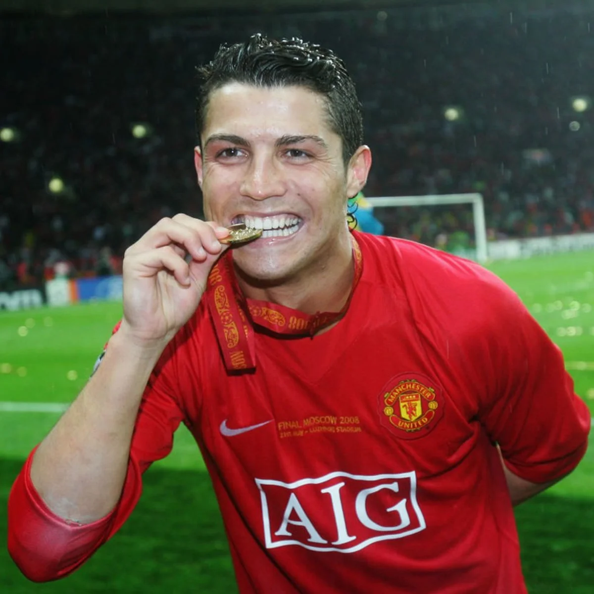

Meu ídolo:

Cristiano Ronaldo
Carreira:
- Começou nas categorias de base do Andorinha e do Nacional, na Ilha da Madeira.
- Entrou na base do Sporting CP e estreou como profissional em 2002.
- Foi contratado pelo Manchester United em 2003.
- Conquistou três Campeonatos Ingleses, a Liga dos Campeões e o Mundial de Clubes pelo Manchester United.
- Transferiu-se para o Real Madrid em 2009.
- Pelo Real Madrid, ganhou quatro Ligas dos Campeões, dois Campeonatos Espanhóis e três Mundiais de Clubes.
- Foi para a Juventus em 2018 e conquistou dois Campeonatos Italianos.
- Retornou ao Manchester United em 2021.
- Passou a jogar pelo Al-Nassr, da Arábia Saudita, em 2023.
- Encerrou sua carreira pela Seleção Portuguesa em novembro de 2026, mas continua atuando pelo Al-Nassr.
Posição e nascimento:
-
Cristiano Ronaldo é atacante. Nasceu em 5 de fevereiro de 1985, em Funchal, na Ilha da Madeira, Portugal.
Principais títulos por clube:
-
Pelo Manchester United, venceu a Liga dos Campeões e o Mundial de Clubes. Pelo Real Madrid, conquistou quatro Ligas dos Campeões, dois Campeonatos Espanhóis e três Mundiais de Clubes. Pela Juventus, ganhou dois Campeonatos Italianos. Com Portugal, venceu a Eurocopa de 2016 e a Liga das Nações da UEFA em 2019 e 2025.
Números da carreira:
-
Até 30 de outubro de 2026, havia marcado 985 gols por clubes e pela seleção. Por Portugal, encerrou a carreira internacional com 234 jogos e 146 gols, recordes no futebol masculino.
Gol marcante:
-
Em 2018, pelo Real Madrid contra a Juventus, marcou um gol de bicicleta que ficou famoso e recebeu aplausos da torcida adversária.
Curiosidade:
-
Em 2009, o Real Madrid pagou cerca de 94 milhões de euros ao Manchester United por sua transferência. O valor foi recorde na época.